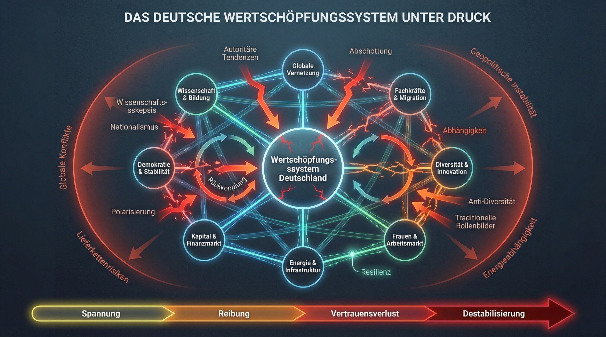
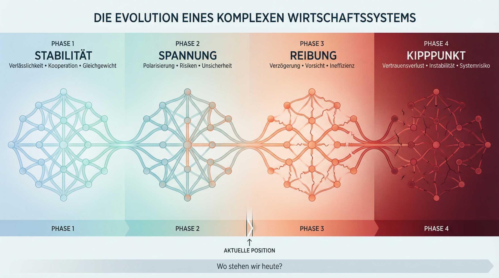

Wenn einfache Antworten auf komplexe Systeme treffen
Wir diskutieren gerade viel über Politik. Über Migration. Energie. Sicherheit. Identität.
Was dabei kaum jemand anspricht, ist eine viel grundlegendere Frage:
Wie kann es sein, dass eine der komplexesten Volkswirtschaften der Welt stabil funktioniert, obwohl ein wachsender Teil der Gesellschaft politische Positionen unterstützt, die genau diese Komplexität infrage stellen?
Denn eines wird in der öffentlichen Debatte häufig übersehen: Die Menschen, die solche Positionen vertreten, stehen nicht außerhalb des Systems. Sie arbeiten mittendrin. In Unternehmen. In globalen Lieferketten. In hochvernetzten Wertschöpfungssystemen. Sie entwickeln Produkte, koordinieren internationale Projekte, arbeiten mit Kolleginnen und Kollegen aus unterschiedlichsten Ländern zusammen - und treffen täglich Entscheidungen, die nur in einem offenen, stabilen und kooperativen System überhaupt funktionieren.
Und gleichzeitig erleben wir politische Forderungen, die genau diese Grundlagen infrage stellen: Abschottung statt Fachkräftezuwanderung. Homogenität statt Diversität. Rückzug statt globaler Vernetzung. Fossile Abhängigkeiten statt resilienter Energieversorgung. Polarisierung statt stabiler demokratischer Institutionen.
Das wirkt auf den ersten Blick wie ein Widerspruch. Aber vielleicht ist das gar kein individueller Widerspruch.
Vielleicht ist es ein Hinweis auf etwas Größeres:
Ein System, das noch funktioniert - obwohl seine eigenen Voraussetzungen zunehmend infrage gestellt werden.
Die entscheidende Frage ist also nicht, ob einzelne Menschen widersprüchlich handeln.
Die entscheidende Frage ist:
Wie lange kann ein hochkomplexes, vernetztes System stabil bleiben, wenn zentrale Teile der Gesellschaft politisch gegen seine eigenen Funktionsbedingungen stehen?
Und noch wichtiger:
Welche Spannungen entstehen daraus - und wann werden sie zu einem echten wirtschaftlichen Risiko?
Genau darum geht es in diesem Beitrag.
Warum das System trotzdem noch funktioniert
Wenn man den beschriebenen Widerspruch ernst nimmt, stellt sich eine naheliegende Frage:
Warum sehen wir nicht längst massive wirtschaftliche Verwerfungen?
Warum funktionieren Unternehmen, Lieferketten und Märkte weiterhin - obwohl politische Narrative zunehmen, die genau diese Strukturen infrage stellen?
Die Antwort ist unbequemer, als sie zunächst klingt: Weil moderne Systeme stärker sind als individuelle Überzeugungen.
1. Menschen handeln in Rollen - nicht nur in Überzeugungen
Ein Mensch ist nie nur „Wähler“ oder „Privatperson“. Er ist gleichzeitig auch:
Mitarbeitender
Führungskraft
Unternehmer
Teil eines Teams
verantwortlich für Budgets, Projekte, Ergebnisse
Und in diesen Rollen gelten andere Regeln als in politischen Debatten.
Im Unternehmen zählen nicht:
Identität
Ideologie
einfache Antworten
Sondern:
Zielerreichung
Effizienz
Zusammenarbeit
wirtschaftliche Tragfähigkeit
Das führt zu einer zentralen Erkenntnis: Menschen können politisch emotional entscheiden - und gleichzeitig beruflich rational handeln. Nicht, weil sie widersprüchlich sind, sondern weil sie sich in unterschiedlichen Systemen bewegen.
2. Systeme disziplinieren Verhalten
Unternehmen sind keine Ideologieräume. Sie sind Wirkungssysteme.
Was sich dort durchsetzt, ist nicht das, was „richtig klingt“, sondern das, was funktioniert.
Entscheidungen werden beeinflusst durch:
Wettbewerb
Kostenstrukturen
Energiepreise
Fachkräfteverfügbarkeit
regulatorische Anforderungen
Erwartungen von Kunden und Investoren
Ein Unternehmen, das sich diesen Realitäten entzieht, verliert an Wettbewerbsfähigkeit.
Das bedeutet: Selbst wenn individuelle Überzeugungen gegen bestimmte Entwicklungen sprechen, zwingt das System zu Entscheidungen, die ökonomisch notwendig sind.
Oder anders formuliert: Der Markt ist rationaler als die Debatte.
3. Der Finanzmarkt als unsichtbare Steuerungsinstanz
Besonders deutlich wird das am Kapital.
Investoren, Banken und Versicherungen treffen ihre Entscheidungen nicht auf Basis politischer Narrative, sondern auf Basis von:
Risiko
Planbarkeit
Renditeerwartung
regulatorischen Rahmenbedingungen
Geopolitische Spannungen, Energieabhängigkeiten oder politische Instabilität wirken sich unmittelbar auf:
Finanzierungskosten
Investitionsentscheidungen
Unternehmensbewertungen
aus.
Das heißt: Kapital reagiert schneller auf reale Risiken, als politische Diskussionen es tun. Und genau dadurch stabilisiert es das System - zumindest kurzfristig.
4. Institutionen als Puffer
Neben Märkten wirken auch Institutionen stabilisierend:
Unternehmen selbst
staatliche Strukturen
der Rechtsstaat
die Europäische Union
Tarifpartnerschaften
Verwaltung und Infrastruktur
Diese Institutionen sorgen dafür, dass selbst bei wachsender politischer Spannung nicht sofort ein Bruch entsteht.
Sie wirken wie Stoßdämpfer in einem komplexen System.
5. Die entscheidende Einschränkung
All das erklärt, warum das System noch funktioniert.
Aber es zeigt auch seine Grenze: Diese Stabilität ist keine Garantie - sondern ein Puffer. Ein System kann über längere Zeit Spannungen aufnehmen, ohne zu kollabieren.
Aber es verändert sich dabei.
Entscheidungen werden vorsichtiger
Investitionen werden zurückgehalten
Transformationen werden verzögert
Risiken steigen schleichend
Und genau hier beginnt das eigentliche Problem: Nicht der plötzliche Zusammenbruch - sondern der langsame Verlust von Leistungsfähigkeit und Resilienz.
Das System funktioniert noch, weil:
Menschen in ihren Rollen rational handeln
Märkte und Kapital Risiken disziplinieren
Institutionen Spannungen abfedern
Aber: Es funktioniert zunehmend unter Spannung. Und genau diese Spannung wird im nächsten Schritt sichtbar, wenn man sich anschaut, wie das System eigentlich aufgebaut ist - und welche Bedingungen es braucht, um stabil zu bleiben.
Das System Deutschland - ein empfindliches Gleichgewicht
Bevor wir über Spannungen sprechen, müssen wir verstehen, was überhaupt unter Spannung steht. Denn moderne Volkswirtschaften funktionieren nicht wie Maschinen. Sie sind keine linearen Systeme mit klaren Ursache-Wirkungs-Ketten.
Sie sind hochvernetzte, dynamische Systeme, in denen viele Elemente gleichzeitig wirken - und voneinander abhängen. Deutschland ist dafür ein besonders gutes Beispiel.
Als drittgrößte Volkswirtschaft der Welt basiert sein Wohlstand nicht auf einzelnen Faktoren, sondern auf einem empfindlichen Gleichgewicht aus mehreren zentralen Säulen.
Die tragenden Elemente
Im Kern lässt sich das deutsche Wertschöpfungssystem auf acht miteinander verbundene Bereiche zurückführen:
Globale Vernetzung Deutschland ist eine Exportnation. Lieferketten, Absatzmärkte und Produktionsstrukturen sind international verflochten. Wertschöpfung entsteht nicht im nationalen Raum, sondern im globalen Zusammenspiel.
Fachkräfte & Migration Ein großer Teil der wirtschaftlichen Leistungsfähigkeit hängt von qualifizierten Arbeitskräften ab - und damit auch von Zuwanderung. Viele Branchen wären ohne sie heute nicht mehr funktionsfähig. Wenn etwa das hochspezialisierte IT-Talent aus Bangalore oder die Ingenieurin aus Brasilien einen Bogen um Deutschland macht, weil das gesellschaftliche Klima abschreckt, ist das kein rein soziales Problem - es ist ein direkter Entzug von Innovationskapital.
Diversität & Innovation Innovation entsteht selten aus Homogenität. Unterschiedliche Perspektiven, Hintergründe und Erfahrungen sind ein zentraler Treiber für Problemlösung und Fortschritt.
Frauen im Arbeitsmarkt Die wirtschaftliche Teilhabe von Frauen ist kein gesellschaftliches „Zusatzthema“, sondern eine zentrale Voraussetzung für Wachstum, Produktivität und Fachkräftesicherung.
Energie & Infrastruktur Wettbewerbsfähigkeit hängt direkt von der Verfügbarkeit, Stabilität und den Kosten von Energie ab. In einer zunehmend instabilen Welt wird Energieversorgung auch zu einer Frage von Resilienz. Marode Brücken oder ein stockender Schienenausbau sind dabei nur die sichtbare Oberfläche; das tiefere Problem entsteht dort, wo politische Volatilität die Planungssicherheit für jahrzehntelange Investitionen zerstört.
Kapital & Finanzmarkt Investitionen, Innovationen und Transformation werden durch Kapital gesteuert. Der Finanzmarkt bewertet Risiken, lenkt Ressourcen und entscheidet darüber, welche Geschäftsmodelle Zukunft haben.
Demokratie & Stabilität Rechtssicherheit, Verlässlichkeit und institutionelles Vertrauen sind keine abstrakten Werte - sie sind harte Standortfaktoren für Unternehmen und Investoren.
Wissenschaft & Bildung Ein innovationsgetriebenes Land ist auf Forschung, Wissenstransfer und eine funktionierende Bildungsinfrastruktur angewiesen. Ohne sie verliert es langfristig seine Wettbewerbsfähigkeit.
Ein System, kein Baukasten
Diese Elemente existieren nicht nebeneinander. Sie sind miteinander verbunden.
Fachkräfte beeinflussen Innovation
Innovation beeinflusst Wettbewerbsfähigkeit
Wettbewerbsfähigkeit beeinflusst Kapitalflüsse
Kapitalflüsse beeinflussen Investitionen
Investitionen beeinflussen Infrastruktur und Energie
Energiepreise beeinflussen Produktionskosten
Produktionskosten beeinflussen Märkte
Und all das ist eingebettet in:
politische Stabilität
gesellschaftliches Vertrauen
globale Entwicklungen
Das bedeutet: Wenn ein Element unter Druck gerät, bleibt das nicht isoliert. Die Auswirkungen wandern durch das gesamte System.
Warum Komplexität kein Problem ist - sondern Voraussetzung
In politischen Debatten wird Komplexität immer wieder als Belastung dargestellt. Etwas, das man reduzieren, vereinfachen oder „zurückdrehen“ sollte.
Doch genau das Gegenteil ist der Fall:
Komplexität ist die Grundlage moderner Wertschöpfung.
Globale Vernetzung ermöglicht Spezialisierung
Diversität ermöglicht Innovation
offene Systeme ermöglichen Anpassungsfähigkeit
institutionelle Stabilität ermöglicht langfristige Planung
Ein Versuch, diese Komplexität zu reduzieren, führt nicht zu mehr Stabilität - sondern zu weniger Leistungsfähigkeit.
Das eigentliche Risiko
Ein solches System ist leistungsfähig. Aber es ist auch empfindlich.
Es reagiert nicht gut auf:
Vereinfachung
Abschottung
Polarisierung
den Abbau von Vertrauen
oder das Ignorieren von Abhängigkeiten
Denn diese Faktoren greifen nicht nur einzelne Bereiche an, sondern die Verbindungen zwischen ihnen. Und genau dort entsteht Stabilität - oder eben Instabilität.
An dieser Stelle wird die Struktur besonders deutlich:

Deutschland ist kein einfaches System, das sich durch einzelne politische Maßnahmen steuern lässt. Es ist ein komplexes, vernetztes Gefüge, dessen Stabilität davon abhängt, dass seine zentralen Elemente zusammenpassen. Und genau diese Passung gerät zunehmend unter Druck.
Im nächsten Schritt wird sichtbar, wo diese Spannungen entstehen - und warum sie systemisch wirken.
Die Spannungsachsen - wo das System unter Druck gerät
Wenn man das deutsche Wertschöpfungssystem als vernetztes Gefüge versteht, dann wird eine Sache schnell klar:
Die eigentliche Gefahr entsteht nicht durch einzelne politische Positionen. Sondern durch Spannungen, die genau auf die tragenden Elemente dieses Systems wirken.
Diese Spannungen verlaufen nicht zufällig. Sie folgen klaren Linien - entlang der zentralen Funktionsbedingungen moderner Volkswirtschaften.
1. Fachkräftebedarf vs. Abschottung
Viele Branchen in Deutschland sind bereits heute auf Zuwanderung angewiesen. Ohne internationale Fachkräfte funktionieren:
Pflege
Industrie
Handwerk
IT
Gastronomie
in großen Teilen nicht mehr. Gleichzeitig gewinnen politische Forderungen an Gewicht, die auf Abschottung setzen.
Das erzeugt eine direkte Spannung: Ein System, das auf Zuwanderung angewiesen ist, kann durch Abschottung nicht stabil bleiben.
2. Innovation vs. Anti-Diversität
Innovation entsteht selten in homogenen Gruppen.
Unterschiedliche Perspektiven, kulturelle Hintergründe und Denkweisen sind entscheidend für:
Problemlösung
Kreativität
technologische Entwicklung
Wenn Diversität als Problem dargestellt oder aktiv zurückgedrängt wird, wirkt das direkt auf die Innovationsfähigkeit eines Landes.
Die Spannung lautet: Ein innovationsgetriebenes System kann nicht gleichzeitig auf Homogenität setzen.
3. Arbeitsmarkt vs. traditionelle Rollenbilder
Die Erwerbsbeteiligung von Frauen ist heute ein zentraler Bestandteil wirtschaftlicher Stabilität.
Gerade in Zeiten von Fachkräftemangel gilt:
weniger Teilhabe = weniger Arbeitskraft
weniger Arbeitskraft = geringere Produktivität
Wenn gleichzeitig politische Narrative entstehen, die Frauen stärker aus dem Arbeitsmarkt zurückdrängen, entsteht ein klarer Zielkonflikt. Ein System mit Fachkräftemangel kann es sich nicht leisten, auf Teile seines Arbeitskräftepotenzials zu verzichten.
4. Exportmodell vs. Nationalismus
Deutschland ist tief in globale Märkte integriert.
Lieferketten sind international
Absatzmärkte liegen weltweit
Produktion ist global vernetzt
Nationalistische Tendenzen, Handelskonflikte oder Abschottungspolitik wirken direkt auf dieses Modell zurück.
Die Spannung ist offensichtlich: Ein exportorientiertes System kann nicht gleichzeitig auf wirtschaftliche Abschottung setzen.
5. Energieversorgung vs. geopolitische Abhängigkeit
Energie ist einer der zentralen Faktoren wirtschaftlicher Stabilität.
Gleichzeitig ist sie stark geopolitisch geprägt:
fossile Energien schaffen Abhängigkeiten
Lieferketten sind politisch verwundbar
Konflikte wirken direkt auf Preise und Verfügbarkeit
Aktuelle Entwicklungen - von Russland über den Nahen Osten bis hin zu globalen Machtverschiebungen - zeigen: Energie ist längst kein rein wirtschaftliches Thema mehr, sondern ein geopolitisches Risiko.
Die entscheidende Spannung lautet: Ein System, das auf stabile Energie angewiesen ist, kann nicht gleichzeitig seine Abhängigkeiten erhöhen.
6. Kapitalmärkte vs. politische Instabilität
Kapital reagiert sensibel auf Unsicherheit.
politische Polarisierung
instabile Rahmenbedingungen
unklare Zukunftsperspektiven
führen zu:
höheren Finanzierungskosten
geringerer Investitionsbereitschaft
Abwanderung von Kapital
Die Spannung: Ein investitionsgetriebenes System braucht Vertrauen - nicht Unsicherheit.
7. Demokratie vs. Polarisierung
Demokratie ist mehr als ein politisches System. Sie ist ein wirtschaftlicher Stabilitätsfaktor.
Rechtssicherheit
Planbarkeit
institutionelles Vertrauen
Wenn gesellschaftliche Polarisierung zunimmt, wirkt sich das nicht nur auf den Diskurs aus, sondern auch auf:
Entscheidungsfähigkeit
politische Stabilität
wirtschaftliche Planungssicherheit
Ein System, das auf Vertrauen basiert, wird durch zunehmende Polarisierung geschwächt.
8. Wissenschaft vs. Skepsis
Technologische Wettbewerbsfähigkeit basiert auf:
Forschung
Innovation
evidenzbasierter Entscheidungsfindung
Wenn wissenschaftliche Erkenntnisse zunehmend infrage gestellt oder relativiert werden, hat das direkte Auswirkungen auf:
technologische Entwicklung
politische Steuerungsfähigkeit
langfristige Wettbewerbsfähigkeit
Die Spannung: Ein wissensbasiertes System kann nicht gleichzeitig wissenschaftliche Grundlagen untergraben.
Das Muster hinter den Spannungen
Wenn man diese Linien zusammennimmt, entsteht ein klares Bild: Es geht nicht um einzelne politische Positionen. Es geht um ein strukturelles Muster:
Vereinfachende, exkludierende und rückwärtsgewandte Narrative treffen auf ein System, das nur durch Offenheit, Komplexität und Kooperation funktioniert.
Warum das so kritisch ist
Diese Spannungen wirken nicht isoliert.
Sie greifen genau die Punkte an, die das System stabil halten:
Offenheit
Vernetzung
Vertrauen
Vielfalt
Anpassungsfähigkeit
Und damit verschiebt sich etwas Entscheidendes: Nicht einzelne Bereiche geraten unter Druck - sondern die Verbindungen zwischen ihnen.
Und genau diese Verbindungen sind es, warm komplexe Systeme funktionieren.
Die eigentliche Herausforderung besteht nicht darin, ob einzelne Forderungen „richtig“ oder „falsch“ sind.
Die eigentliche Herausforderung ist: Ob sie zur Funktionslogik des Systems passen.
Und genau hier wird sichtbar: Viele dieser Spannungen wirken nicht nur politisch - sondern ökonomisch destabilisierend.
Doch die entscheidende Dynamik entsteht erst im nächsten Schritt: Wenn sich diese Spannungen gegenseitig verstärken.
Wenn Spannungen sich verstärken - die Dynamik systemischer Rückkopplungen
Bis hierhin könnte man argumentieren: Ja, es gibt Spannungen. Ja, es gibt Widersprüche. Aber Systeme halten so etwas doch aus. Und das stimmt.
Komplexe Systeme sind erstaunlich resilient. Sie können über lange Zeit widersprüchliche Einflüsse aufnehmen, ohne zu kollabieren.
Der entscheidende Punkt ist jedoch: Systeme reagieren nicht linear. Sie reagieren über Rückkopplungen.
Was bedeutet das?
In einem linearen System gilt: Ursache → Wirkung
In einem komplexen System gilt: Ursache → Wirkung → verstärkte Ursache → stärkere Wirkung
Oder einfacher: Effekte wirken zurück auf ihre eigenen Ursachen. Und genau hier entsteht Dynamik.
Beispiel 1: Abschottung und Fachkräftemangel
Zuwanderung wird begrenzt → Fachkräfte fehlen
Fachkräfte fehlen → Produktivität sinkt
Produktivität sinkt → Wachstum verlangsamt sich
Wachstum verlangsamt sich → wirtschaftliche Unsicherheit steigt
Unsicherheit steigt → Zukunftsängste nehmen zu
Zukunftsängste nehmen zu → Zustimmung zu einfachen Lösungen wächst
→ und damit genau zu den Maßnahmen, die das Problem verstärken
Beispiel 2: Polarisierung und wirtschaftliche Stabilität
Gesellschaftliche Polarisierung nimmt zu → Vertrauen sinkt
Vertrauen sinkt → politische Entscheidungsfähigkeit wird schwächer
politische Entscheidungsfähigkeit sinkt → Reformen werden verzögert
Reformen werden verzögert → wirtschaftliche Anpassung verlangsamt sich
wirtschaftliche Anpassung verlangsamt sich → Probleme verschärfen sich
→ und verstärken wiederum die Polarisierung
Beispiel 3: Energieabhängigkeit und geopolitische Risiken
Abhängigkeit von externen Energiequellen bleibt bestehen → Verwundbarkeit steigt
geopolitische Spannungen nehmen zu → Energiepreise werden volatiler
Energiepreise steigen oder schwanken stark → Produktionskosten steigen
Produktionskosten steigen → Wettbewerbsfähigkeit sinkt
Wettbewerbsfähigkeit sinkt → wirtschaftlicher Druck steigt
→ was wiederum politische Spannungen verstärkt
Warum Rückkopplungen so gefährlich sind
Der entscheidende Unterschied zu isolierten Problemen ist: Rückkopplungen verstärken sich selbst.
Das bedeutet:
kleine Ursachen können große Wirkungen entfalten
Entwicklungen beschleunigen sich
Systeme können plötzlich kippen
Nicht, weil ein einzelnes Ereignis eintritt - sondern weil sich viele Effekte gegenseitig hochschaukeln.
Das Missverständnis von Stabilität
Ein häufiges Missverständnis ist: „Es funktioniert doch noch - also kann es nicht so schlimm sein.“ Doch genau das ist typisch für komplexe Systeme.
Sie wirken stabil - bis sie es nicht mehr sind.
Vor einem Kipppunkt sieht ein System häufig lange Zeit robust aus. Die eigentlichen Veränderungen passieren im Hintergrund:
schleichender Vertrauensverlust
steigende Unsicherheit
zunehmende Ineffizienz
verzögerte Anpassung
Erst wenn ein kritischer Punkt erreicht ist, werden die Effekte plötzlich sichtbar.
Die Rolle von Zeit
Rückkopplungen wirken nicht sofort.
Sie entfalten sich über Zeit:
langsam
schrittweise
häufig unbemerkt
Das macht sie besonders gefährlich. Denn während die Ursachen noch diskutiert werden, hat die Dynamik bereits begonnen.
Der entscheidende Punkt
Wenn man die vorherigen Spannungsachsen mit diesen Rückkopplungen verbindet, entsteht ein klares Bild: Es geht nicht um einzelne politische Entscheidungen. Es geht um Dynamiken, die sich selbst verstärken.
Und genau dadurch wird aus:
politischer Spannung → ein ökonomisches Risiko → und im Extremfall eine systemische Instabilität
Die eigentliche Gefahr liegt nicht in einzelnen Positionen.
Sie liegt in der Kombination aus:
Spannungen
Vernetzung
und Rückkopplungen
Denn genau diese Kombination entscheidet darüber, ob ein System stabil bleibt - oder kippt.
Die nächste Frage ist deshalb entscheidend: Wo stehen wir aktuell in diesem Prozess? Und wie nah sind wir an einem kritischen Punkt?
Wo wir heute stehen - zwischen Stabilität und zunehmender Reibung
Nach all den Spannungen und Rückkopplungen stellt sich die entscheidende Frage: Stehen wir bereits vor einem Systembruch - oder ist das alles noch beherrschbar?
Die ehrliche Antwort lautet: Wir sind nicht im Kollaps. Aber wir sind auch nicht mehr im stabilen Gleichgewicht.

Phase 1: Stabilität - die Vergangenheit
Lange Zeit war das deutsche Modell geprägt durch:
hohe institutionelle Stabilität
funktionierende internationale Kooperation
relativ geringe politische Polarisierung
starke wirtschaftliche Verlässlichkeit
Spannungen gab es auch damals. Aber sie wurden durch das System gut ausgeglichen.
Phase 2: Spannung - der Übergang
Heute sehen wir eine andere Situation.
Viele der zuvor beschriebenen Spannungen sind nicht mehr isoliert, sondern treten gleichzeitig auf:
zunehmende politische Polarisierung
Fachkräftemangel in zentralen Branchen
Unsicherheiten in globalen Lieferketten
steigende geopolitische Risiken
Energiepreisvolatilität
gesellschaftliche Verunsicherung
Das System funktioniert noch.
Aber: Es arbeitet nicht mehr reibungslos.
Phase 3: Reibung - erste sichtbare Effekte
Die Auswirkungen sind bereits spürbar - wenn auch häufig indirekt:
Investitionsentscheidungen werden vorsichtiger
Unternehmen verschieben Transformationen
Projekte dauern länger
Fachkräftelücken bleiben unbesetzt
politische Entscheidungen werden schwerer durchsetzbar
Diese Effekte wirken zunächst klein.
Doch in einem komplexen System summieren sie sich.
Phase 4: Der mögliche Kipppunkt
Ein System kippt nicht durch ein einzelnes Ereignis.
Es kippt, wenn:
Spannungen dauerhaft bestehen
Rückkopplungen sich verstärken
Puffermechanismen erschöpft sind
Dann verändert sich etwas grundlegend:
Vertrauen sinkt
Kapital reagiert schneller
Anpassungsfähigkeit nimmt ab
Instabilität wird zum neuen Normalzustand
Wichtig ist:
Dieser Punkt ist nicht klar sichtbar. Er wird häufig erst im Nachhinein erkannt.
Warum wir ihn ernst nehmen sollten
Gerade weil das System noch funktioniert, wird die Situation häufig unterschätzt.
Doch genau darin liegt das Risiko.
Die aktuellen Entwicklungen zeigen:
wirtschaftliche Unsicherheiten nehmen zu
politische Debatten entkoppeln sich teilweise von realen Zusammenhängen
globale Konflikte wirken direkt auf Märkte und Energie
gesellschaftliche Spannungen steigen
Das sind keine isolierten Phänomene. Es sind Signale eines Systems unter Druck.
Keine Panik - aber Klarheit
Es geht nicht darum, ein Szenario des Zusammenbruchs zu zeichnen.
Es geht darum, zu verstehen: Stabilität ist kein Zustand, der einfach bestehen bleibt. Sie muss aktiv erhalten werden.
Und genau das wird schwieriger, wenn politische und gesellschaftliche Entwicklungen zunehmend gegen die Funktionslogik des Systems wirken.
Wir befinden uns in einer Phase, in der das System noch stabil ist - aber bereits deutlich unter Spannung steht. Die entscheidende Frage ist deshalb nicht, ob es heute funktioniert.
Die entscheidende Frage ist: Wie widerstandsfähig ist es gegenüber den Entwicklungen, die bereits im Gange sind?
Und genau hier kommt eine weitere Dimension ins Spiel, die häufig unterschätzt wird:
Die globale Perspektive.
Ein häufiges Missverständnis
In diesem Zusammenhang taucht häufig ein Argument auf: „Diese Entwicklungen können damit nichts zu tun haben - die entsprechenden politischen Kräfte sind ja gar nicht an der Regierung.“ Auf den ersten Blick wirkt das plausibel. Doch so funktionieren komplexe Systeme nicht. Sie reagieren nicht erst, wenn politische Maßnahmen umgesetzt werden. Sie reagieren bereits auf Erwartungen, Unsicherheit und wahrgenommene Entwicklungen.
Unternehmen treffen Investitionsentscheidungen nicht nur auf Basis aktueller Rahmenbedingungen, sondern auch auf Basis dessen, was sie für wahrscheinlich halten.
Kapital reagiert sensibel auf Risiken - auch auf politische. Und gesellschaftliche Polarisierung wirkt sich unmittelbar auf Vertrauen und Stabilität aus.
Das bedeutet: Veränderungen im System beginnen nicht erst mit konkreten Entscheidungen. Sie beginnen bereits dann, wenn sich Erwartungen verschieben.
Und genau deshalb lassen sich erste Reibungsverluste bereits beobachten, lange bevor strukturelle Veränderungen vollständig sichtbar werden.
Geopolitik, Energie und Resilienz - warum Stabilität kein Zufall ist
Die bisherigen Spannungen lassen sich nicht isoliert betrachten. Sie sind eingebettet in eine Welt, die selbst zunehmend instabiler wird. Konflikte, Machtverschiebungen und geopolitische Interessen wirken heute direkt auf wirtschaftliche Systeme zurück - schneller und unmittelbarer als noch vor wenigen Jahrzehnten.
Eine neue Realität: Globale Instabilität
Wir erleben aktuell eine Phase, in der mehrere geopolitische Dynamiken gleichzeitig wirken:
Der Krieg in der Ukraine hat gezeigt, wie stark Energie als politisches Druckmittel eingesetzt werden kann.
Spannungen im Nahen Osten beeinflussen unmittelbar Energiepreise und Lieferketten.
Die Rolle der USA verändert sich - zwischen globaler Führungsrolle, innenpolitischer Polarisierung und möglichen protektionistischen Tendenzen.
China tritt zunehmend als wirtschaftlicher und politischer Gegenpol auf.
Diese Entwicklungen haben eine gemeinsame Konsequenz: Die Welt wird nicht stabiler - sondern volatiler.
Energie als geopolitischer Hebel
Besonders deutlich wird das beim Thema Energie. Energie ist keine abstrakte Größe. Sie ist die Grundlage jeder industriellen Wertschöpfung.
Und sie ist:
begrenzt
handelbar
politisch beeinflussbar
Fossile Energieträger wie Öl und Gas sind historisch eng mit geopolitischen Abhängigkeiten verknüpft.
Wer sie nutzt, ist häufig auf:
bestimmte Regionen
politische Systeme
fragile Lieferketten
angewiesen.
Auch nukleare Energie ist kein vollständig unabhängiges System:
Uran muss importiert werden
Lieferketten sind global
geopolitische Risiken bleiben bestehen
Das bedeutet: Energiepolitik ist immer auch Geopolitik.
Die entscheidende Unterscheidung: Abhängigkeit vs. Resilienz
Vor diesem Hintergrund wird eine zentrale Frage sichtbar:
Erhöhen wir unsere Abhängigkeiten - oder reduzieren wir sie?
Fossile Systeme erhöhen tendenziell Abhängigkeiten
zentralisierte Strukturen erhöhen Verwundbarkeit
geopolitische Spannungen verstärken diese Risiken
Dem gegenüber steht ein anderes Modell:
erneuerbare Energien
dezentrale Systeme
regionale Wertschöpfung
geringere externe Abhängigkeiten
Diese Strukturen sind nicht nur eine ökologische Option.
Sie sind vor allem eines: Ein Beitrag zur Resilienz.
Was Resilienz wirklich bedeutet
In der klassischen Wirtschaft wurde lange Effizienz priorisiert:
niedrige Kosten
optimierte Prozesse
minimale Redundanzen
In einer stabilen Welt funktioniert das gut. In einer instabilen Welt nicht mehr.
Heute wird ein anderer Faktor entscheidend:
Resilienz - Die Fähigkeit, mit Störungen umzugehen, ohne zu kollabieren.
Resilienz entsteht durch:
Diversität
Dezentralität
Redundanzen
Anpassungsfähigkeit
stabile Institutionen
Und genau diese Faktoren stehen häufig im Gegensatz zu vereinfachenden politischen Narrativen.
Der systemische Zusammenhang
Wenn man Geopolitik, Energie und Wirtschaft zusammendenkt, ergibt sich ein klares Bild:
globale Instabilität nimmt zu
Energie wird als Machtinstrument genutzt
Abhängigkeiten werden riskanter
Anpassungsfähigkeit wird entscheidend
Das bedeutet: Die Anforderungen an das System steigen.
Nicht weniger Komplexität. Sondern mehr.
Nicht weniger Vernetzung. Sondern intelligentere.
Nicht mehr Abschottung. Sondern mehr strategische Resilienz.
Der kritische Punkt
Genau hier entsteht eine zentrale Spannung unserer Zeit: Während die Welt komplexer und unsicherer wird, gewinnen gleichzeitig Narrative an Bedeutung, die auf Vereinfachung, Abschottung und Kontrolle setzen.
Doch: Ein komplexer werdendes System lässt sich nicht durch Vereinfachung stabilisieren.
Im Gegenteil:
Vereinfachung in einem komplexen Umfeld führt häufig zu:
falschen Entscheidungen
höheren Risiken
geringerer Anpassungsfähigkeit
Geopolitik ist kein externer Faktor. Sie ist Teil des Systems.
Und sie verändert die Spielregeln:
Stabilität entsteht nicht mehr durch Abschottung, sondern durch Resilienz in einem vernetzten, unsicheren Umfeld.
Damit wird eine Sache deutlich: Die Frage ist nicht mehr nur, ob ein System funktioniert.
Die Frage ist: Wie gut es mit Unsicherheit umgehen kann.
Und genau hier zeigt sich, ob die aktuellen Entwicklungen zur Stabilisierung beitragen - oder sie weiter unter Druck setzen.
Komplexität und Vereinfachung - ein grundlegender Konflikt unserer Zeit
Wenn man die bisherigen Entwicklungen zusammennimmt, stellt sich eine übergeordnete Frage: Warum entstehen diese Spannungen überhaupt?
Warum treffen politische Narrative auf ein System, zu dem sie scheinbar nicht passen?
Die Antwort liegt nicht nur in einzelnen Themen wie Energie, Migration oder Wirtschaft. Sie liegt tiefer.
Die Anforderungen moderner Systeme
Moderne Gesellschaften und Volkswirtschaften sind hochkomplex.
Sie erfordern:
das gleichzeitige Denken in mehreren Zusammenhängen
das Aushalten von Widersprüchen
die Fähigkeit, Unsicherheit zu akzeptieren
das Verstehen von Wechselwirkungen und Abhängigkeiten
Kurz gesagt: Sie erfordern kognitive Komplexität.
Die Fähigkeit, nicht nur einfache Ursache-Wirkung-Ketten zu sehen, sondern vernetzte Systeme zu verstehen.
Die Attraktivität von Vereinfachung
Dem gegenüber stehen Narrative, die genau das Gegenteil bieten:
klare Schuldige
einfache Lösungen
eindeutige Kategorien
scheinbare Kontrolle
Diese Narrative sind nicht zufällig erfolgreich. Sie erfüllen ein menschliches Bedürfnis:
Komplexität zu reduzieren.
Denn komplexe Systeme sind anstrengend:
sie sind schwer zu verstehen
schwer zu erklären
schwer zu steuern
Vereinfachung dagegen ist:
schnell verständlich
emotional anschlussfähig
handlungsorientiert
Der eigentliche Konflikt
Damit wird sichtbar, dass es sich nicht nur um einen politischen Konflikt handelt.
Es ist ein tieferer Gegensatz: Komplexitätsanforderung vs. Vereinfachungsangebot
Oder anders formuliert:
Die Realität wird komplexer
Die Antworten werden einfacher
Warum das problematisch ist
In einfachen Systemen können einfache Lösungen funktionieren. In komplexen Systemen normalerweise nicht.
Denn:
einfache Maßnahmen haben häufig unerwartete Nebenwirkungen
Eingriffe wirken an mehreren Stellen gleichzeitig
Zusammenhänge werden übersehen
Das führt dazu, dass: Gut klingende Lösungen reale Probleme verstärken können. Nicht, weil sie „böse“ sind - sondern weil sie nicht zur Struktur des Systems passen.
Ein Beispiel für diesen Mechanismus
Wenn ein komplexes System wie eine Volkswirtschaft auf einen einzelnen Faktor reduziert wird - etwa:
Migration
Energie
nationale Identität
dann werden andere relevante Faktoren ausgeblendet:
Arbeitsmarkt
Innovation
Kapitalflüsse
globale Verflechtungen
Die Folge: Entscheidungen wirken isoliert logisch, aber systemisch falsch.
Der psychologische Verstärker
Dieser Effekt wird zusätzlich verstärkt durch:
soziale Medien
verkürzte Kommunikation
algorithmische Verstärkung
emotionale Dynamiken
Komplexe Zusammenhänge lassen sich schwer vermitteln. Einfache Narrative dagegen verbreiten sich schnell.
Das verschiebt den Diskurs: Weg von systemischem Verständnis - hin zu vereinfachten Erklärungen.
Die eigentliche Herausforderung
Damit wird klar: Die aktuelle Situation ist nicht nur eine politische oder wirtschaftliche Krise.
Sie ist auch eine: Krise im Umgang mit Komplexität.
Ein System, das auf:
Vernetzung
Offenheit
Differenzierung
angewiesen ist, wird zunehmend mit:
Vereinfachung
Abgrenzung
Reduktion
konfrontiert.
Die Spannungen, die wir beobachten, sind kein Zufall. Sie entstehen aus einem grundlegenden Missverhältnis: Ein komplexes System wird mit Denk- und Handlungsmustern konfrontiert, die für einfache Systeme entwickelt wurden.
Und genau dieses Missverhältnis entscheidet darüber, wie stabil oder instabil das System langfristig bleibt. Die entscheidende Frage ist deshalb nicht nur, welche Positionen vertreten werden.
Sondern:
Ob sie der Komplexität des Systems gerecht werden, in dem sie wirken.
Wirkung, Kapital und die blinde Stelle der Debatte
Wenn man die bisherigen Zusammenhänge zusammennimmt, entsteht ein bemerkenswertes Bild: Während politische Debatten häufig entlang von Meinungen, Identitäten und Narrativen geführt werden, folgt ein zentraler Teil des Systems längst einer anderen Logik.
Der Logik der Wirkung.
Kapital kennt keine Ideologie. Besonders deutlich wird das im Finanzmarkt.
Kapital wird nicht danach verteilt, was politisch attraktiv erscheint oder emotional überzeugt.
Es folgt anderen Kriterien:
Risiko
Stabilität
Planbarkeit
zukünftige Ertragsfähigkeit
Das bedeutet:
Geopolitische Spannungen, Energieabhängigkeiten, politische Instabilität oder gesellschaftliche Polarisierung werden nicht diskutiert - sie werden eingepreist.
Und das häufig schneller, als politische Systeme darauf reagieren. Kapital ist in dieser Hinsicht 'feige' - und das ist seine Aufgabe. Es wartet nicht auf den systemischen Zusammenbruch, um zu protestieren; es zieht einfach leise ab. Wir sehen dann keinen plötzlichen Knall, sondern eine schleichende Deindustrialisierung, bei der Investitionen in andere Märkte fließen, wo die Funktionsbedingungen stabiler erscheinen.
Wirkung wird bereits bewertet - aber implizit
In der Praxis passiert bereits heute etwas Entscheidendes:
Klimarisiken beeinflussen Investitionen
politische Unsicherheit erhöht Kapitalkosten
Energieabhängigkeiten verändern Geschäftsmodelle
gesellschaftliche Instabilität wirkt auf Märkte
Das heißt: Wirkung wird längst berücksichtigt - aber nicht systematisch, nicht transparent und nicht vollständig.
Sie zeigt sich indirekt:
in Preisen
in Risikoaufschlägen
in Kapitalflüssen
Die blinde Stelle
Gleichzeitig fehlt etwas Entscheidendes: Eine klare, explizite Bewertung von Wirkung.
Politische und gesellschaftliche Entscheidungen werden selten danach beurteilt:
welche Auswirkungen sie auf wirtschaftliche Stabilität haben
wie sie sich auf gesellschaftlichen Zusammenhalt auswirken
welche Folgen sie für zukünftige Generationen haben
wie sie das Zusammenspiel der Systeme beeinflussen
Stattdessen dominieren:
Narrative
kurzfristige Interessen
vereinfachte Erklärungen
Das Problem dahinter
Das führt zu einem zentralen Defizit: Ein hochkomplexes System wird nicht nach seiner Wirkung gesteuert, sondern nach Wahrnehmung und Interpretation.
Und genau dadurch entstehen die Spannungen, die wir zuvor beschrieben haben.
Was sich ändern müsste
Wenn man die Logik des Systems ernst nimmt, ergibt sich daraus eine klare Konsequenz: Entscheidungen müssten konsequent danach bewertet werden, welche Wirkung sie auf das Gesamtsystem haben.
Das bedeutet:
Wirkung auf wirtschaftliche Stabilität
Wirkung auf gesellschaftlichen Zusammenhalt
Wirkung auf ökologische Grundlagen
Wirkung auf demokratische Strukturen
Nicht isoliert. Sondern im Zusammenspiel.
Eine andere Form von Steuerung
Ein solcher Ansatz würde die Perspektive verschieben:
weg von kurzfristigen Effekten
hin zu langfristigen Zusammenhängen
weg von isolierten Themen
hin zu vernetzten Wirkungen
weg von Meinungen
hin zu systemischer Bewertung
Damit würde sichtbar werden, was heute häufig verborgen bleibt: Welche Entscheidungen das System stabilisieren - und welche es unter Druck setzen.
Die Verbindung des bisher gesagten
Wenn man die Spannungsachsen, Rückkopplungen und geopolitischen Dynamiken zusammennimmt, wird deutlich: Viele der aktuellen Entwicklungen wirken nicht nur politisch.
Sie haben konkrete Auswirkungen auf:
Kapitalflüsse
Investitionsentscheidungen
Energiepreise
Wettbewerbsfähigkeit
gesellschaftliche Stabilität
Und genau diese Wirkungen entscheiden darüber, ob ein System langfristig tragfähig bleibt.
Die eigentliche Herausforderung besteht nicht darin, die „richtigen“ politischen Positionen zu finden. Die eigentliche Herausforderung besteht darin: Zu verstehen, welche Wirkung Entscheidungen in einem komplexen System entfalten.
Denn genau diese Wirkung bestimmt:
Stabilität oder Instabilität
Wachstum oder Stagnation
Resilienz oder Verwundbarkeit
Und damit die Zukunftsfähigkeit des gesamten Systems.
Der entscheidende Gedanke
Vielleicht liegt die größte Veränderung nicht in neuen Lösungen.
Sondern in einer neuen Frage: Nicht: Was klingt richtig? Sondern: Was wirkt - und wie?
Fazit - Stabilität ist kein Zustand
Wenn man alle Ebenen zusammennimmt - das System, die Spannungen, die Rückkopplungen, die geopolitischen Dynamiken und die Rolle von Wirkung - dann ergibt sich ein klares Bild: Wir stehen nicht vor einer einzelnen politischen oder wirtschaftlichen Herausforderung. Wir stehen vor einer systemischen.
Kein Problem einzelner Positionen
Es geht nicht darum, ob einzelne Forderungen richtig oder falsch sind.
Es geht darum, ob sie: Zur Funktionslogik eines hochkomplexen Systems passen.
Ein System, das auf:
Vernetzung
Offenheit
Diversität
Stabilität
Vertrauen
angewiesen ist, kann nicht dauerhaft stabil bleiben, wenn gleichzeitig Narrative an Einfluss gewinnen, die genau diese Grundlagen infrage stellen.
Die eigentliche Verschiebung
Die größte Veränderung passiert nicht auf der Oberfläche.
Sie passiert im Hintergrund:
Verbindungen werden schwächer
Vertrauen nimmt ab
Entscheidungen werden vorsichtiger
Anpassungsfähigkeit sinkt
Das System bricht nicht plötzlich. Es verliert schrittweise seine Leistungsfähigkeit.
Warum das so relevant ist
Deutschland ist kein isoliertes System. Als eine der größten Volkswirtschaften der Welt hat seine Stabilität Auswirkungen weit über die eigenen Grenzen hinaus.
Und genau deshalb gilt: Instabilität entsteht nicht nur durch äußere Einflüsse. Sondern vor allem dann, wenn ein System von innen heraus unter Druck gerät.
Die entscheidende Frage
Die zentrale Frage ist deshalb nicht: Ob das System heute noch funktioniert.
Sondern: Ob die Entscheidungen, die wir heute treffen, seine Stabilität langfristig stärken - oder schwächen.
Ein anderer Blick auf Politik
Vielleicht braucht es genau hier eine Verschiebung:
Weg von der Frage, welche Position sich durchsetzt.
Hin zu der Frage: Welche Wirkung sie im System entfaltet.
stabilisierend oder destabilisierend
verbindend oder spaltend
resilient oder verwundbar
Die eigentliche Herausforderung
Wir leben in einer Zeit, in der unsere Systeme zwangsläufig komplexer werden müssen, um in einer volatilen Welt zu bestehen, während gleichzeitig die politischen Antworten darauf immer einfacher und reduktionistischer ausfallen. Dieses Spannungsfeld lässt sich nicht durch noch mehr Vereinfachung auflösen, sondern nur durch ein tieferes Verständnis der systemischen Wirkungen unserer Entscheidungen. Stabilität ist kein statischer Zustand, den wir besitzen, sondern das tägliche Ergebnis von Entscheidungen, die entweder das Fundament stärken oder es schleichend untergraben.
Die letzte Erkenntnis
Wohlstand ist kein Selbstläufer. Er entsteht aus einem empfindlichen Gleichgewicht.
Und dieses Gleichgewicht bleibt nicht bestehen, wenn die Bedingungen, die es tragen, zunehmend infrage gestellt werden.
Schlussgedanke
Stabilität ist kein Zustand. Sie ist das Ergebnis von Entscheidungen. Und genau deshalb entscheidet sich die Zukunft nicht daran, was wir glauben. Sondern daran, was unsere Entscheidungen bewirken.
* Die 25% ist kein abstraktes Schreckgespenst; sie spiegelt jenen Anteil der Gesellschaft wider, der laut aktuellen Wahlumfragen und soziologischen Studien Positionen unterstützt, die mit den Grundpfeilern unseres Wirtschaftsmodells offen brechen.